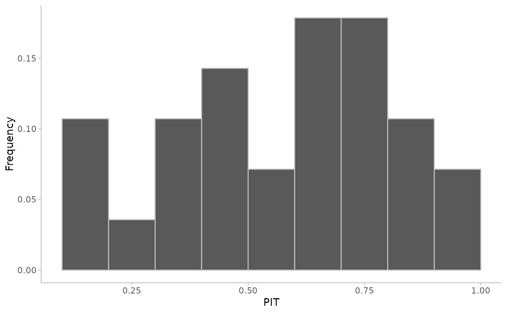
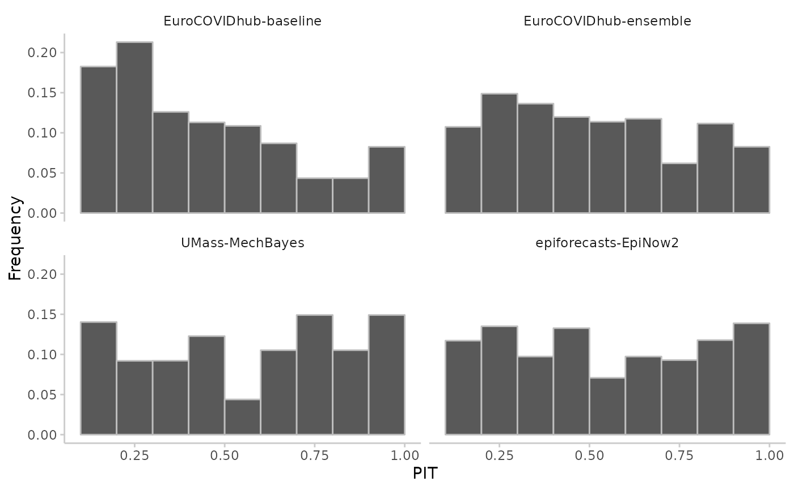
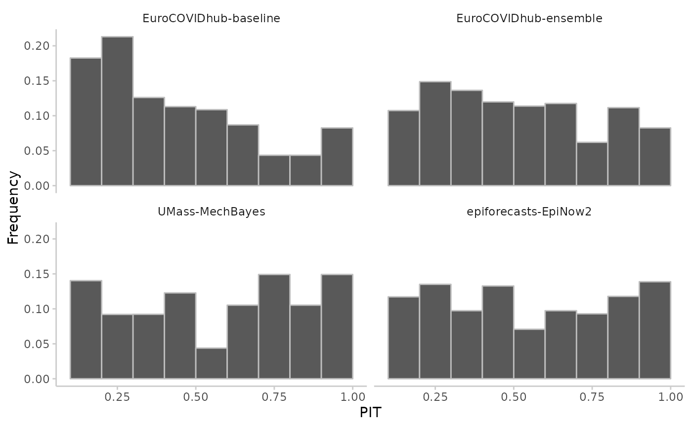

Make a simple histogram of the probability integral transformed values to visually check whether a uniform distribution seems likely.
Arguments
- pit
either a vector with the PIT values of size n, or a data.frame as produced by
pit()- num_bins
the number of bins in the PIT histogram, default is "auto". When
num_bins == "auto",plot_pit()will either display 10 bins, or it will display a bin for each available quantile in case you passed in data in a quantile-based format. You can control the number of bins by supplying a number. This is fine for sample-based pit histograms, but may fail for quantile-based formats. In this case it is preferred to supply explicit breaks points using thebreaksargument.- breaks
numeric vector with the break points for the bins in the PIT histogram. This is preferred when creating a PIT histogram based on quantile-based data. Default is
NULLand breaks will be determined bynum_bins.
Examples
# PIT histogram in vector based format
true_values <- rnorm(30, mean = 1:30)
predictions <- replicate(200, rnorm(n = 30, mean = 1:30))
pit <- pit_sample(true_values, predictions)
plot_pit(pit)

# quantile-based pit
pit <- pit(example_quantile, by = c("model"))
#> The following messages were produced when checking inputs:
#> 1. 144 values for `prediction` are NA in the data provided and the corresponding rows were removed. This may indicate a problem if unexpected.
plot_pit(pit, breaks = seq(0.1, 1, 0.1))
 # sample-based pit
pit <- pit(example_integer, by = c("model"))
#> The following messages were produced when checking inputs:
#> 1. 144 values for `prediction` are NA in the data provided and the corresponding rows were removed. This may indicate a problem if unexpected.
plot_pit(pit)

# sample-based pit
pit <- pit(example_integer, by = c("model"))
#> The following messages were produced when checking inputs:
#> 1. 144 values for `prediction` are NA in the data provided and the corresponding rows were removed. This may indicate a problem if unexpected.
plot_pit(pit)
